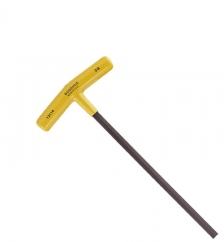
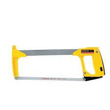

Introduction to Robotics
First of all, welcome.
Robotics is hard work. Reading these documents will give you a basis for understanding many of the things you will need to know. Like anything else, they are useless without application, and can only be refined with practice. With that said: nothing ever turns out how it is supposed to. This line carries so much weight the more you delve into robotics. I hope you’ll never have to experience the full burden of that phrase. In fact, no one should. That’s why you have a team.
My first year in robotics, I was placed on a team with new and old friends. Our only downside was that we were new to everything. We had no seniors on our team, so we looked to seniors on other teams for guidance. Even though we learned much from them, we had to teach ourselves many of the things that would become beneficial to us. Our first year, we only went to 3 tournaments and our highest ranking was 22nd place. But, we considered this a success because we were able to build and program a working robot that completed the task at hand--albeit not very well. Our second year we won a tournament, qualifying for states and nationals. I write this now, looking into my third season and back at my first two, and realize that we became what freshman us needed to look up to and learn from. So, my friends and I have compiled our knowledge into these documents for you and any other newcomers who need this information.
-- Julian Cooper Leader and Lead Builder of 53E, Class of 2022
Recommended Reading Order
Different people need to read different parts of this manual at different times. When you transfer into a new position, we suggest reading the corresponding section.
Freshman Year
Builders: Building Techniques
Coders: Coding Techniques
Drivers: Driving Techniques
Notebookers: Notebooking Techniques
In your freshman year, you aren’t expected to be the lead builder, lead coder, lead driver, or lead notebooker, but if you’re looking into it, you should start learning. Your freshman year is also about making mistakes in order to improve. You aren’t expected to lead your team through a season or a tournament, but you are expected to learn, so that you will have the experience and confidence to lead when you are older. Don’t be afraid to make mistakes and ask questions, it’s more important that you build your knowledge through practice.
Junior Year
Leaders: Leading Techniques
Club Leaders: Theory
In your junior year, one member of your team should probably be taking the leading role. They’re big shoes to fill - leaders need to have a grasp of all aspects of robotics and need to be able to guide and empower their team. Read Leading Techniques. Many times, devoted members want to restructure the club because they don’t like X, Y, and Z. These people don’t have to be the leaders of teams, but a large group of devoted members will be able to make positive changes. Read Theory.
Introduction
Welcome
As a freshman, you’ll need to learn new skills, and be able to execute them. As I’ve said, my freshman year was not nearly as good as my sophomore year, but I learned many skills and lessons to prepare me. I’m trying to include 3 things in this manual: General robotics knowledge, Stuff no one teaches you but expects you to do (like taxes), and Theory. You have to understand general robotics knowledge to be able to do anything. This includes everything in The Basics and everything except Leading in The Techniques. I would also include Resources here, but it contains links for all types of skills. Still check out Resources and know how to use the links. Next is the tax-like stuff. You should understand this to become a better teammate, and to understand how to handle situations. If you know how to properly handle situations, you’re a very valuable person. These include Leading, and everything in The Season and The Tournament. Last, we have theory. This may be the worst part of this document because we get away from the robotics standpoint and approach the “political” side of it. I’ll elaborate more in the actual section, but Theory teaches you how to lead and change the entire club. Take everything I say as a guideline; always put your own spin on these to better conform to your environment. Other than that, I can only give you my best.
Being a Good Teammate
A good teammate has valuable robotics skills, but is also generally a good person. We’ll start on robotics skills, which I’ll elaborate more on in The Techniques. Each person has their own job. Each person should be the best person, or close to the best, for that job. If you know how to navigate your job well, and solve problems within your job, you have valuable robotics skills. But, let’s say that you have the best person for each role. All of them hate each other. This team won’t work as each person can’t be a good person to each other. If you have a team with people that can work well together, no matter the robotics skill, they will be a good team and if not they’ll at least have fun. To close, be a nice person to your teammates. You should have different opinions and ideas, but you should also resolve the differences healthily. Robotics will get heated, but if your team can solve the problem using logic, you’ll turn out on top.
The Basics
The basics
Tools
Here is a list of all the tools we have in robotics. They will be a picture, common names, and uses.
Screwdrivers and wrenches
Allen Wrench

- Also called an “L” or “L wrench”.
- Fits 8-32 hex screws, the common screw we use.
- This is the hardest hex driver to use, although it works best in small places and when supplies are short.
Motor Allen
Same as the allen wrench, but fits 6-32 hex screws.
6-32 hex screws are mainly used in collars.
T Hex Driver

Also called a “T” or “T wrench”.
Fits 8-32 hex screws, the common screw we use.
This is another hard hex driver to use because of the long length of the driver as it can twist. But, works well for additional reach or torque.
German

Fits 8-32 hex screws, the common screw we use. This is the best hex driver to use if you have it. It’s very strong and it’s amazing for anything in general.
Wrench
The large head is used to hold nuts to tighten screws, the small head is used to tighten standoffs.
Used with any hex driver or another wrench.
Ratchet
Used to tighten screws, but can only turn one direction.
Useful in tight spaces where you can’t turn 360 degrees.
Saws and Files
Wear eye protection when using any type of saw, especially a fast moving saw. Also please learn to use these from someone with experience before trying. I won’t give any warnings here, so follow your instructor’s instructions or the product’s warnings.
Dremel

Used to cut metal and various plastic parts.
It’s better to use a dremel to cut through steel and a hacksaw to cut through aluminum.
Hacksaw

Used to cut metal and various plastic parts.
It’s better to use a hacksaw to cut through aluminum and a dremel to cut through steel.
Snips

Large scissors used to cut aluminum quickly.
Often leaves the surface with rough edges.
File

Used to remove sharp edges from metal.
You can also use files to strip teeth off of a gear, although I would not recommend it (I’ve done it before).
Grinder

Also called a “bench grinder”
Used to remove sharp edges from metal.
Parts
There are a lot of parts. Some are obscure, some are necessary. Everyone should know how to be able to use simple parts well to fit their needs. If you need to use a part once, you should try to learn it fully. These files are very large and take about an hour in total to watch, but they should have all the knowledge you need to know about parts.
Structure
Note: I forgot about a “rail”, it’s basically a worse C-Channel. I would only use them for bracing
Motion
Hardware
Electronics
Here is a link to learn more about sensors: VEX Sensors
Custom and NonVEX Parts
Slip Gears
- This is made from any plastic Vex gear.
- Used for lots of shooting mechanisms.
- When the gear is spun, it’ll drive another gear when the teeth connect, but when the flat side of the slip gear contacts the gear, the driven gear won’t move (or move into position of least tension).
Ratchets
-
I couldn’t find a good picture of a ratchet, so here are 2 videos showing them. Ratchets are useful because they will only turn in one direction. Normally you have a 60 tooth gear with a screw insert, and a 12 tooth gear or 6 tooth sprocket (both with axle inserts) on an axle. You also have a rubber banded screw directly attached to the 60 tooth, which contacts the 12 or 6 tooth at an angle. When the 12 or 6 tooth turns, it will either brush over the head of the screw and not turn the 60 tooth, or push the screw and turn the 60 tooth.
Lexan
- Clear plastic used for custom shapes.
- Many teams use this to create gussets for different angles or because the Vex ones suck.
- Lexan can also be bent.
- Must be cut from a 12” x 24” x 0.07” sheet.
Rubber bands
- Used to hold systems in place, propel systems, open systems, or give support to motors.
- Common uses:
- Holding in anti-tips (wheels that prevent tipping)
- Shooting mechanisms
- Expanding trays
- Holding up lifts
- Advantage brand rubber bands are the best.
Zip Ties
- Used to hold wires or other small systems in place.
- Should not be used structurally, be can in a pinch.
- Mainly used for wire management.
- My team once used them to hold our anti-tips in, not a good idea.
String
- Unlimited amount of ⅛” braided, nylon rope.
- Used to hold systems in place against tension.
Tape
- Used for wire management, or as a color for the Light Sensor
- Cannot be used for structural purposes.
Subsystems
Drivetrains
The drivetrain is THE important part of your robot and should be the first thing you take time to think out. Most of this is covered in the video although I wanted to highlight them here.Your drivetrain needs:
- 6 dots apart (3 in), will be more for mecanum wheels
- Not 2 gel wheels on one side
- Almost always 2 motors per side
- Internal bracings (standoffs or other small metal braces holding the C-Channel together)
- Around 2 cross-robot bracings (bracings that go across the entire robot)
- When gearing, make sure your wheels spin the same way
- When using sprockets, fine tune your chain tension
- Your drivetrain is important, so build it well. It might take you some time to do it, but it carries your robot, so it better be good.
Lifts
Lifts are necessary when you have to extend upwards. They need to be stable and sturdy because the load they carry is often heavy. The cascade lift is a weird lift and it’s not used a lot, but I’ve included a video that explains it. Things you should make sure to have on your lifts:
- Cross bracings (ones that are perpendicular to your lifting bars)
- X bracings (ones that cross your lifting bars)
- Triangle bracings supporting your posts
- Anti tips (we’ll cover this more later, but helps with balance)
- Counter weights (use if needed)
- Screw joints
- Lifts are hard to make, but are very rewarding. Making lifts well is necessary, a good amount of games make your robot extend.
Intakes
Intakes are very efficient mechanisms that are widely used. There are many takes on them, but the most basic should work just as fine. Building intakes are very easy, although knowing which type to build can be difficult.
Use flat intakes when:
- The object you need to pick up is flat
- You need 1 orientation for your object

Use single-sprocket intakes when:
- You need to get around a post and have intakes in front and behind the post
- You need to conform to a lot of different shapes

Use only tread when:
-
You need support, but nothing else
Use chain-backed tread when:
-
You need a lot of support
-
This is when you have 3 sprockets stacked on top of each other with the top and bottom sprockets using chain and the middle sprocket using tread. The chain should be inside the tread and will provide support to the top and bottom of the tread.
Use rubber band-wrapped gears or rubber band-wrapped, chain-wrapped sprockets or traction wheels when: You want a thin but solid intake Use omni-wheels when: You want your intake to be able to move up and down This will also increase the variability in your intakes
Another important thing to know about intakes is your release point. Compression also becomes a factor here. Compression describes the friction between 2 objects, 1 that you’re trying to move. Too great and it’ll stay still, too little and there’ll be no force. For intakes this is especially important as they are constantly being used and efficiency is key. If your intakes need to extend in a direction make sure to consider this:
Flip-down intakes
-
Swing down, allowing for vertical storage
-
If they are over-compressed, the screw joint will fail Unstable closer to the end of the intakes Flip-out intakes:
-
Swing parallel to the ground, allowing for side storage
-
Allows for variable compression to a degree
-
As long as they are kept parallel, they’ll be fine
Punch-out intakes
- Uses linear slides to guide the intakes
- Exact compression
- Needs space for slides
Shooting
Shooting mechanisms are interesting because you have to increase the velocity of a normally stationary object. You sometimes have to generate enough energy to push an object, meaning that you have to get your force and accuracy down.
Catapult
Catapults generate a lot of force because of the rubber bands, so make sure they’re properly structured not to break. They are also difficult because the launch point (when the object leaves the catapult), determines where the object goes. You also need to perfect your slip gear, how many teeth you need to remove, because that determines how much power your catapult has. These take a lot of testing to perfect, but can carry a lot of objects.
Puncher
Punchers use a linear arm to strike an object. They generate a lot of force, and are more repeatable than catapults. They also take up little space. The difficulty in punchers lay in how you angle them. You can have one angle and move your robot, or you can have an angler that moves your puncher. A high-level puncher is very hard to make, but very beautiful when it works.
Flywheel
Wheel spin fast. That’s it. You need to make sure that your wheel can spin fast enough and that the ball can fly well. The hood angle is important because it determines where the ball goes. The compression on a flywheel is very important. Compression is the distance between two objects that help intake or shoot an object. If there is too much compression then the object will not travel very far because of the large amounts of friction. If there is too little there will not be enough force to shoot the object. This makes flywheels difficult to build well. Flywheels can shoot very far and are the most repeatable because they are almost always active.
Building Techniques
Building might be one of the hardest techniques because there’s always something new. When your robot breaks, it’s because of the building. Your coder’s limit, it’s defined by the building. Your driver’s capabilities, it’s defined by the building. Your little sibling breaks your robot, you should’ve built it better. This section is going to be broken down into 3 subsections each with their own topics. These topics may be new, they may have been repeated a thousand times (they should probably be repeated again). Either way, these topics should help you improve your robot. But implementing them is not enough. A good builder needs to know how to build well and take into account their coder’s and driver’s needs. I can’t discuss that, but when you can take your coder’s or your driver’s idea and implement it semi-perfectly, you’ve made it.
Stationary
Our first topic is stationary relations. This includes a lot of metal to metal contact and objects that are stationary relative to the object they’re attached to. Most of the framework for your robot is here, while the magic that makes it move is in the next section.
Nylocks vs Crowns (Keps)
Use Nylocks when:
- You’re screwing in a load bearing joint (a screw in a nut)
- You’re using a screw joint
- Any important connections and if you have them any time you can
- Use Crowns when:
- You’re testing designs or you’re going to take them apart
- You’re in a rush
- You need to hold spacers in a certain point on a screw (use them like collars)
Jointing
To clarify, because I haven’t been super clear about this: “joint” has 2 meanings.
- A connection between a screw and a nut that allows no moving parts
- A connection between a screw and a nut that allows moving parts The first are standard joints that you will always create. The second is always referred to as a “screw joint.” This may not be the correct terminology, but that’s what I’m calling it.
Jointing Video (Stop at 9:22, that’s when Bracing starts)
Canteleveration
Canteleveration is a big word so let’s break it down. Cante: Spanish word for sing in first person singular. Lever: lots of force on one side. Basically, it’s a structure that’s only supported on 1 side. This can range anywhere from axles to C-Channel. Axles are obvious because you need to support each side with metal and bearings. There is one exception here: You can have one side of the axle exposed if there are 2 pieces of metal supporting the other end. C-Channel is a bit more obscure because if you joint it properly, it might not need the extra support. But, if it’s able to be supported, it’s probably worth doing.
I accidentally canteleverated a bearing block. I was only able to screw in 1 side of the bearing because of lack of spacing for the other screw head. The axle was in the middle. There was so much weight on the axle that it pushed the bearing down. Canteleveration extends to jointing small things too.
Bracing
There are 2 main shapes that you want to create to support your robot: Triangles and Rectangles. You should use bracing to support posts (vertical metal) or any horizontal metal. This will help keep your robot sturdy, and stop parts from moving that shouldn’t be moving. Bracing your robot will keep parts where you want them.
Parts:
- Standoffs - Use them with collars to hold up structures.
- 1x1 L-Channel - Use these as a thin way to hold up structures.
- C-Channel - Use these as a sturdy way to hold up structures.
Shapes:
- Triangles - Create pythagorean triples (3, 4, 5 or 5, 12, 13). Use standoffs or 1x1 L-Channel. Use 90° parts like pillow bearings, collars, or L-Channel to connect standoffs to the post or horizontal structure.
- Rectangles - Subdivide larger squares into smaller ones. Use standoffs, L-Channel, or C-Channel. These include cross braces that span your drivetrain and hold your braces.
Balance
Balancing your robot is important to not over-stress your drive motors. If you have too much weight in the back, the motors powering your back wheels will stress in trying to carry the weight. Some things you need to consider: Where the weight is in your robot w/o game parts Where the weight is in your robot w/ game parts If your center of gravity is high or low How force affects your robot Getting pushed from the front, side, or back Mechanisms that produce substantial force usually through rubber bands
How to fix it:
- Careful Planning - When designing your robot, try to ensure your robot has a low center of gravity. This can be done by keeping as much of the weight low to the ground as possible. In particular, you want to keep as many of your motors low to the ground as possible, along with your robot’s brain and battery. If your robot has steel pieces, they should also be low to the ground.
- Counterweights - These are mostly steel plates or C-Channels. If you have too much weight in the back, add plates in the front, or add a steel C-Channel as a brace in the front. If your robot is top heavy, you could replace some of your drivetrain C-Channel for steel. Put your counterweights where the actual weight isn’t.
- Anti-Tips - These are used commonly with DR4Bs (double-reverse-4-bars) or long extensions of your robot. These are basically another set of wheels that extend from either the front or back of the robot. Usually they are a smaller set of wheels (3.25 in or 2.75in), rubber band-wrapped gears, or even pulley wheels (they’re hard to find). Sometimes they’ll extend using linear slides, others will flip out from the sides or back.
Custom Parts
You are allowed to create certain parts in robotics. All of these have been mentioned in parts. Here we’ll elaborate more on lexan and custom metal. Lexan is a bendable plastic that you can use. It can create better curves than metal (in this competition) because you don’t have to bend it by hand. It can also create better gussets. You aren’t allowed to use sheet metal in robotics, but there are a few ways around it. You can cut C-Channel or plates into different shapes to fit your needs. You can bend it to create curves, they aren’t as good as lexan though. Understanding how to manipulate your lexan and metal will help you create better parts that fit your robot how you need them.
Moving
The next topic is moving relations. This isn’t when you and your girlfriend move to different schools. You’re in robotics, you wouldn’t have a girlfriend. If something uses a motor, it’s probably in this section.
Bearings, Spacers, Collars
Knowing when to use bearing blocks, spacers, and collars is important. Any axle needs all 3 for clean building. There are tons of combinations, and only a few of them don’t work. Bearings, Spacers, & Collars Video (Stop at 7:08, that’s when Rubber Bands starts)
Screws vs Axles
In robotics, we can’t use screws that are larger than 2.5 inches. Since your nylock is under 0.25 in, that gives you about 2.25 in of screw to work with. Also remember that axles go up to 12 in long. When deciding what to use for a joint you need to consider the size of the joint. If it’s less than 2.5 in, use a screw joint; if it’s more, use an axle. Pretty simple. The basic rule is to use screws until you can’t. But why? In Stationary, I talked about slop. More moving parts are going to create a larger chance of slop, while less moving parts are going to reduce it. With screws, there are 2 “moving” parts, the screw and the nylock. With axles, there are 3: the axle and 2 collars. Collars are also dangerous because we have really bad collars and they can come undone easily.
Rubber Bands
An important non-VEX part that you can use are rubber bands. They have a lot of different uses but their main ones include:
- Tension for shooting mechanisms
- Tension for lifting mechanisms
- Releasing release mechanisms
- Rollers
Shooting mechanisms like the puncher and catapult require rubber bands to pull them forwards. The slip gear pulls it back, tightening the rubber band and when no teeth are exposed, the rubber bands release, bringing the mechanism forwards. Lifting mechanisms are often heavy so we use rubber bands to hold some of the weight. Use them on any type of bar. Try to create a triangle that expands as the mechanism goes down, but shrinks as it goes up. Release mechanisms are pretty simple because you have something that holds the mechanism in while the rubber bands are bending. When that object leaves, the rubber bands act and pull the mechanism into place. Rollers are similar to intakes in function, but not in design. They’re 2 sprockets spaced apart on the same axle. In the grooves of the sprocket you string rubber bands to the other side. You can still use chain on these. Rubber Bands Video (Stop at 10:18, that’s when Gears, Sprockets, & Ratios starts)
Rubber bands are very useful and there are many types of rubber bands. We commonly use size 64. We also buy from the company Advantage as they have a lot of different types of rubber bands. Some are more stretchy and work better at longer distances, some are sturdier and work better at shorter distances. Buy the ones you want to try and test them. It’s probably a good idea to have multiple styles on hand. Generic Staples rubber bands also do the job. Since you’re using rubber bands frequently and they usually pull large forces, it’s good to replace them often. You might need 2-4 sets of rubber bands for a tournament. Keep track of how many rubber bands you need and where you need them so you can be prepared. Also try to use old rubber bands that have lost their elasticity for simple mechanisms like anti-tips. Rubber bands may also tear or cut, so make sure you get rid of them. I like to tear them apart so we know we can’t use it.
Gears, Sprockets, and Ratios
I’m not going to talk about when to use gears and sprockets because they’re very similar and pretty obvious when you need to move power around. Although a good rule of thumb is to use gears for short ranges and sprockets for large ranges. This section is about gear ratios and how to use them. I’m only going to be using gears as my example, but know that sprockets work the same. Also, because I might have not said this, we have 3 speeds of motors: 100rpm, 200rpm, and 600rpm. The higher the rpm, the lower the torque. Torque is the inverse of speed. If you need to go fast, you want a high speed, while your side effect is a lower moving capability. If you need to move something heavy, you want a high torque, while your side effect is a lower speed.
Gear A to Gear B results in B/A times torque and A/B times speed The ratio is then called A/B simplified. If Gear A is smaller, you’ll get higher torque, lower speed. If Gear A is larger, you’ll get lower torque, higher speed.
If there are 3 or more gears, Gear A is powered by the motor and Gear B is the farthest most gear.
I’ll go through a written example too. If we have a motor driving a 12 tooth (A), which then turns a 36 tooth (B), we get 3x higher torque and 3x slower speed. So let’s say our motor is driving at 600 rpms. Our 36 tooth is driving at 200 rpms and our 12 tooth is driving at 600 rpms. Lower rpms deliver higher torque, while higher rpms deliver higher speeds.
That’s simple gears. Let’s say you have a motor powering Gear A. Gear A then powers Gear B. Gear B is on the same axle as Gear C. Gear C then powers Gear D. We’ll use the same example. The motor is 600 rpms, Gear A and C are 12 tooths, Gear B and D are 36 tooths. Gear A experiences 600 rpms. Gear B experiences 200rpms. Gear C also experiences 200 rpms. Gear D then experiences 200/3 rpms. We get 9x higher torque and 9x slower speed from Gear D. By placing gears on the same axle to transfer power, we multiply each ending gear together. One way to think about it is the motor powers Gear A which transfers it to B. Then Gear B acts as the motor that powers Gear C which transfers it to D.
Custom Parts
Here we’re talking about slip gears and ratchets. Slip gears allow for punchers and catapults to work, they don’t have too many other uses. If your mechanism can translate into a puncher or a catapult then use a slip gear. If it doesn’t, then see if you can use something else. Ratchets allow you to move a mechanism one way and one way only. If your mechanism needs to move one way, consider using these.
Drivetrain
This is the second time we’ve talked about the drivetrain, but it’s a very important part of your robot. This is going to teach you the forbidden knowledge of good drivetrains and how you should use them. For this section, there’s only going to be one video but it’ll cover everything.
Bracings Your drivetrain should include 2 types of bracings. It can hold other types of bracings, but those change, these are always necessary. Inner Brace: Your inner brace holds one side of your drivetrain together. Usually it’s a standoff in the middle or something similar. Cross-Drivetrain Brace: This brace crosses your drivetrain to hold it together. You should probably have multiple of these. My general rule is to have 2 in the center that span the entire drivetrain, 1 that spans the inside of the drivetrain or the entire drivetrain, and any amount of other braces.
Sizing
For Omni or Traction wheels you generally want 6 dots wide. This allows you to fit an Omni wheel and a sprocket inside, even though it’s tight. You do not need to have room for the wheel to turn like a car’s wheels. Mecanum wheels may need more space because they’re larger.
The length of your drivetrain depends on what you want to do. A shorter drivetrain lets you have more open space in the front or back, but you might lose stability with farther back wheels. A longer drivetrain is going to let you be more stable, but you lose space. Many times when designing a drivetrain you should create it in 35 long or 30 long. If it has sprockets in it, the size is adjustable. If it has gears the size is adjustable to a degree.
Gearing and Speeds Your drivetrain uses the same physics as normal gears. But, we should take into account the different wheel sizes. Let’s say we have a 200 rpm motor directly powering our 4in wheel. That wheel goes at 200 rpms, but it’s speed is 800pi in/min (circumference times rpms = in/min). Let’s take a 200 rpm motor directly powering a 3.25 in wheel. It still goes at 200 rpms, but it’s speed is now 650pi in/min. We could try and compare these speeds in in/min, but we can also compare them in rpms of a 4in wheel. We divide each speed (in/min) by 4pi (the circumference of a 4in wheel) to get 200 rpm for the 4in wheel and 160 rpm for the 3.25 in wheel. These are a bit easier to compare and might help you visualize speeds better. Usually you want 200-300 rpms for your robot. Too slow and you can’t do anything. Too fast and you have no torque.
H-Drive vs X-Drive
The most common types of drivetrains are H and X-Drives. They’re named because of the shape that the entire drivetrain makes. Your normal drivetrain, with wheels all in a line, forms an H after you add a brace. An X drive forms an octagon, with wheels along the diagonals. The braces do not normally cross to make the X, rather they’re similar to the H-Drive bracing. The differences about an X-Drive include:
- All Omni wheels
- Ability to strafe
- Easiest as direct drive
- There must be 4 motors
- √2 x faster than an H-Drive
So if you think about how the X-Drive moves and how the wheels turn, you’ll see that it can move in any direction without turning. This is amazing for it because it allows you to move faster. You also have to code and drive it differently, but that doesn’t affect building too much. You can also see how you would need 4 direct drive motors because you can’t turn your gears around a corner. What you might not understand is why it’s √2 x faster. Its tradeoff is that it has √2 x less torque. Here’s a much better explanation: Why is X-Drive Faster? - AURA
Preventing Defense
VEX Robotics is played in a competitive game. This means that there will inevitably be opposing robots trying to prevent your robot from scoring. One way teams will do this is by pushing your robot out of the way, typically from the side. This can be prevented by using a center traction wheel and/or adding skirts/wedges.
Center Traction Wheel
A traction wheel in the center of your drivetrain is a very good way of preventing being pushed from the side. However, it is key that the traction wheel is located near the center of rotation for the robot, because it will have the least effect on the turning of the robot. Traction wheels have a lot of grip, but when a robot is turning, this grip works against it, because the wheel must drive in an arc, which means the wheel must skid somewhat. This is why we always recommend using omni wheels, because the small rollers help decrease the friction involved in turning. With the traction wheel in the center of the robot, however, the arc when turning is the smallest, which means the effect of friction is the lowest. Below is a CAD render of 53A’s Worlds drivetrain for Tipping Point, which uses a center traction wheel, along with skirts.

Skirts
Skirts are pieces of lexan mounted on the side of a drivetrain at an angle to prevent pushing. This works by creating a ramp for opposing robots to drive up if they try to push, thus reducing their pushing power in the horizontal direction. These are usually mounted on hinges and backed by a piece of c-channel for rigidity, although alternative methods can be used if hinges stick out past the c-channel too much. Below is a CAD screenshot of 53E’s early season Tipping Point design, with a low profile custom hinge mechanism using standoffs and collars.connected to an 1-by angle.

Wedges
Wedges are similar to skirts in that they are a slanted piece designed to cause other robots to ride up them, but wedges are mounted on the back of the drivetrain and typically used in a defensive manner to disrupt opposing robots. Below is a picture of 1721G’s Change Up robot, which was a defense bot that utilized aggressive driving and wedges very well.

Coding Techniques
Driving Techniques
Drive Team
Contrary to popular belief, the drive team is not there just to watch. In fact, the drive team actually bears the most responsibility during a match. As a drive team member, your job is to keep track of everything. And by everything, I do mean everything. You should know what your teammate is doing, what your opponents are doing, who is winning, who is losing, how much time is left, where your driver should go next to score, who is in a vulnerable position that you can take advantage of, and more. Drive team members should not solely watch their own robot, but instead watch the entire match and take stock of the entire game situation.
One drive team member should stay focused on the time while also talking to the alliance partner’s drive team. Effective communication within an alliance is important to winning. The other drive team member should be focused monitoring the whole game and telling the driver where to go. These are only general roles, which may change slightly depending on the game. For example, in Tower Takeover, one drive team member’s job was always to keep track of the number of cubes of each color each alliance had to determine which color cubes to place in the tower to benefit their own alliance.
Driver
The driver’s only job is to drive the robot. However, this does not mean they do not need to know the game and its rules extremely well. Although the drive team should do their best to tell the driver the best course of action at all times, it is inevitable that the driver will have to make a split second decision in order to win. In a pinch, the driver should be able to fulfill either or both of the drive team member’s jobs, but this is not ideal as it gives the driver too many things to focus on.
Practice
There is no real way to teach someone how to drive. In my experience, the only way to learn to drive is to practice. Depending on the state of completion of your robot, practice can involve many different things. If your robot is only a drivetrain at this point, you can set up obstacle courses to complete or practice driving from point A to point B or simply practice driving to a certain spot and turning your bot to face a certain direction. If you have a mostly or fully completed bot, you should try doing full skills runs to practice your driver skills or play in scrimmages against other teams to get experience in match-like conditions. And if you can’t drive your bot, try watching match videos or come up with new strategies to try.
Driving in a Match
There’s nothing really to say here except to remain calm and be adaptable.
Notebooking Techniques
I can’t notebook. I can barely read my own handwriting. I’ll turn it over to our best notebookers: Terry from 53A and Chad from 53E. Terry’s notebooks have won numerous awards, he’s the real deal. What is notebooking and documentation? Quoted from Wikipedia (it's a good source despite what school tells you, trust me), documentation is “communicable material that is used to describe, explain or instruct regarding some attributes of an object, system or procedure, such as its parts, assembly, installation, maintenance, and use.” Simply put, you are showing the process taken to reach your final product, simple as that. It’s hard at first, it’s time-consuming, however as we shall explain later, it is very important and applicable not only to VEX, but also in your future careers.
Notebooking in VEX is especially important since it is key to several important awards:
- The Design Award
- The Excellence Award
- To reach these, your notebook needs to:
- Highlight what your robot is
- Prove that you built it
- Dive into the details of how you built it.
- Detail how you improved over time
Teresa has compiled a slideshow for use alongside this section.
Basic Rules
(Slides 2-5) You’ll need to follow some basics.
- Must be written in blue or black ink
- No typing!
- If you have the time, as often as possible type an entry, edit it, and then transcribe it.
- No white-out
- Accept your mistakes, don’t edit your entries to look better.
- If you write the wrong word, draw a single line through it and continue
- If it’s more than 5 words, sign the error
- Plan out your sentences so this doesn’t happen
- Plan out large titles on other papers
- Don’t cover words with photos, you’ll lose points
- Each page is signed and initialed by writer and a witness
- Notes are in chronological order and dated
- You can’t glue/tape in entries
- You can glue/tape in photos or drawings
You’ll also need to spread the work around. Writing is a lot of work. Each person should be contributing to entries, whether it’s through an online document, writing rough drafts, or coming up with ideas or topics to write about. Contributing to notes is also key here.
Your best artists should also do drawings. Drawings are real eye-catchers so they should be good, we’ll talk more in-depth about drawing later. Only 1 person should be writing in the notebook, but there should be a system of other people helping that person out with obtaining material to write about. Optimally, people write into an online document, it’s edited, and then transcribed. But, if you have to go straight to transcribing (you’ll want to do it fast so you don't forget the information).
First Pages
(Slides 6-10) Before we talk about content, we should tell you how your notebook is organized. Depending on the notebook you have, your Table of Contents or Profile will be first. Next, you talk about this year’s game. Lastly, you talk about meetings and tournaments, they’ll be in the next sections. Your first pages give the judges their first impression about your notebook (besides the cover). Make sure these look the way you want them to and contain all the right information.
Profile
Your profile is when you introduce your team. You can add pictures of your team members and provide a more detailed introduction on who they are (keep this simple, 1-2 sentences max). Remember, this part is all about your team, not about your robot. If you really want to stand out to judges, you should place a key in this area. There are 2 color-coded keys. One to denote team members, the other to denote notebook topics. The second is sticky note tabs. These help improve organization and make the layout seem standardized.
Table of Contents
Your table of contents breaks down your notebook. It’s used to make it easier to find information and can show a brief overview of what you’ve done.
Pre-Reveal Reflection
Your pre-reveal reflection talks about what went well and what didn’t in your previous season. This is an important discussion to have as it will help you grow as a team.
Rubric Requirements
(Slides 11-19) This is what gives you points, make sure you have them. This section details an important process, known as the engineering design process (sometimes abbreviated EDP). In the slideshow, please use page 1 of the design award rubric so you know everything judges are looking for in a notebook.
Game Rules
This will be a fairly long and colorful entry. Make sure to note all rules relevant to this game. Having drawings of the field and game elements can be handy as they’re useful for reference.
Brainstorming
Any type of project needs to be brainstormed. Break down each main section of your robot and record pros and cons. Go in-depth into what each part does and how it affects the whole design. The more quality ideas you have here, the better. Use your previous knowledge, what you’ve viewed when other people used the design, or even build the design, to know how a design works (any takeaways). Judges notice new and innovative ideas, so don't be afraid to put something in even if it seems outlandish or out of the box. It is usually these ideas that really improve the quality of your robot and make you stand out as a great team.
Design Selection
You’ll need to select your top 1 or 2 designs so that you have something to fall back on. There are multiple ways to decide.
- Democracy - Each person votes for the best design
- Rank the Designs - Each person ranks all the designs and assigns points to them. When totaled, whichever has the most is chosen
- Lead - Either the leader or lead builder chooses what they think is best
- Scoring - The entire team assigns a point value to each design, the highest is chosen
- Assigning points can be a great way to see the strengths and weaknesses of a design from several different viewpoints (Example: Mobility, Speed, Power, etc)
Building and Coding
This will take a large portion of your season and your early meetings. Record this chronologically.
Building
Make sure to create a design plan, sketches, commentary on progress, pictures, and any other things that help document the entire process of how you got from start to finish. You’ll want to note what went well, but also what didn’t. How you fix these issues is important. Occasionally, you’ll need to rebuild a subsystem or even the entire robot. You can redo your entire brainstorming session, or look at your previous results. Make sure to record your reasons for rebuilding, how you did it, and what the results were.
Coding
Make sure to take screenshots of code, and especially unique code. By having a special program or coding section, this can really be a great way to stand out to judges who are looking for something different than the rest of the teams. For auton runs, record data and paths taken into the notebook. This will allow judges to see what you did and allow you to improve among these runs. Be sure to show drivetrain code and describe how your drivetrain works. Other subsystems should also be highlighted. You can even draw a controller to show what happens when you press this button. Sensors can improve your robot, and depending on how you write them up, can improve your notebook. Note how the coder coded the sensor, implemented it, and what the difference would be if you didn’t have the sensor.
Driving
There are many times where your driver will have to pick up the controller. They’ll all fall under this category and your notebook should reference all of them.
Testing
After fixing a part or changing the code, you’ll want to see how the robot reacts. Note the change and then have your driver test it a few times. Note the results, quantitative or qualitative. You can also set hypotheses and goals to try and get to a certain point. Note these and any improvements.
Practice
Sometimes your driver just needs seat-time. You can make a point of it to time them to score X amount of points or score an amount of points in X time. These are good quantitative results. You can also discuss different driving strategies. Maybe you’ve noticed that you score your points very fast. This may lead you to play more defense if you know you can score points without much time. If you can’t score fast, maybe you can’t play defense. Maybe you’ve noticed that when you do X your robot responds Y. Depending on what it is, you may have to build a strategy around it or correct it. These are important qualitative results. This will also help your driver know how to improve.
Skills
1 minute, score as many points as you can. Do lots of tests, especially if you prioritize skills during tournaments. Record different tests, their scores, and recent modifications that happened. You might also need to record changes to driving strategies or the robot itself during skills. For example, my team removed a part of our robot for skills so we could complete different objectives. With practice, you’ll find what’s optimal.
Other Requirements
Make sure you repeat your building, coding, and driving/testing so that you can improve your robot. Besides being necessary for a good robot, you need to document these changes for a good notebook. You and other teams should also be able to repeat any changes that you made, even building an exact copy of the entire robot just by reading your notebook. Make it detailed and organized! Buy your notebook first, don’t bind it. Be thorough with the projects you show. Make sure to write each of them out and include them in your table of contents.
Extra Entries
(Slides 20-35) There are some important entries you should make that aren’t necessarily part of the rubric, although they’re necessary to have to compete for awards (but they will greatly increase your chances to get one).
Tournaments
Tournaments are what makes robotics. They can also make your notebook. Try to write these entries as soon as possible since you have the memory fresh in your mind.
Reflection
An overall breakdown of the day. Talk about the tournament and how you did. Anything that was outstanding, good or bad, should be said here.
Match Analysis
This is when you can compare how your robot did in practice vs in theory. Start off with any strategies that you planned. Then talk about the match itself. Make sure to say why you won or lost, whether it be driving skills, robot quality, autonomous, or even luck. Although don’t rely on luck too much. Don't forget to include your scores.
Addressing Problems
Have each person say what they thought went wrong. Many times, this will be connected to your match analysis. Sometimes you have to make a fix in-between matches, include that problem here and the solution in the next section. Here you may also want to mention subsystems that underperformed, or didn’t perform how you thought they would.
Planning Changes
Suggest new solutions to the problems you’ve mentioned. Make sure to think of short-term fixes if you don’t have time. If you do have time, do the long-term fix. You may also want to include different things other teams did, if they outperformed your robot. Other teams’ robots can always be starting points as a reference for improvement.
Long Term Plans
Write about what you need to do and how many meetings it will take. You may not have enough meetings to do everything so you’ll have to explain that you chose the most important. Talk about what you’re going to fix, this could go in its own entry.
Drawing
Drawings are really important because they highlight your notebook. A good drawing can explain a system better than words can. Use a ruler for these as you’ll want straight lines, it goes a long way in helping your drawings look professional. You may also want to use colored pencils or pens. Don’t mess up your drawings, so you may want to practice it on a separate piece of paper first. When you do mess up, try to correct it as much as you can or distinguish the error. Don’t cover up drawings, although if you need to break the rules, don’t let it be found.
Photography
Photos are your primary source for showing off your robot. Be sure to use them well. Take pictures as you build so that judges can see the chronological flow from how you started to the finished product. Also take multiple pictures so that you can choose the best one. You’ll have to stage your photos a bit, so keep that in mind. Make sure to get sharp and clear photos that have good lighting. When printing them out, it is recommended to use the schools’ printers since they can produce very vibrant pictures (seeing it firsthand, there is a noticeable difference)
Code Inclusion
Code is really important to add since it shows that you’re actually programming your robot. You’ll want to add screenshots as soon as you have them. You may even want to add pseudocode before you start coding. Make sure you show any edits to your code and any unique parts that you have.
Digital Notebooking
Final Tips
(Slides 36-37) Keep improving, good luck!
Leading Techniques
The leader of a team isn’t just the leader. They’re a builder, coder, or driver, and they don’t even have to be the best. The leader’s job has nothing to do with the robot, rather, it has everything to do with your teammates. I do want to say that all leaders are different, so there will be some practices that I implement that you don’t agree with. The differences arise in how your team functions and each person’s personality.
Meetings
As the leader, your job is to direct each meeting so that your teammates stay on track and current goals are completed. Your meetings will change as your season progresses because your goals change. For example in the beginning of the season, your goal is to get the robot built, while at the end of the season you may prioritize driving. Below is a generalized meeting:
Pre-Meeting
Go into the meeting prepared with what you want to accomplish. Maybe today’s the day you build the drivetrain, maybe you practice auton. Have your meeting thought out a day or two in advance. It doesn’t have to be super thorough, although a checklist could help here. You may not finish all the tasks you want to during a meeting, this is normal, just make sure that you can finish all the tasks you want to before the time that they’re relevant (e.g. a tournament).
Start of the Meeting
The most important part about the beginning is getting people organized. Many times people will be late for various reasons so make sure you can cover them or ensure that they’re early. You should try and get your teammates working as soon as possible, this includes you. If you have a task you need to start, start it. If you need to get someone else’s task started (pulling out the robot and relevant parts), do so as it will help get people moving as they come in. Once everyone is there, fill them in on the goals. It’s always nice to have people stand around a table and have a concise plan laid out. This is also a good time to let your team be aware of any important news that comes up. This may also be the only time you can talk to your entire team at once with their attention, so if you need to say anything do it now.
Middle of the Meeting
Your team should break to complete whatever goals you have laid out. For example, the lead builder will talk to the secondary builder(s) about what needs to be built and how they’ll do it. Many times, especially later in the season, you will have goals that need to be completed after another goal. If you can, try to keep people active within your team. If you’re practicing auton and your builders have nothing to do, have them reset the field. If you have no jobs for people, send them to help out another team. Everyone appreciates an extra set of hands. Remember, busywork is still a job, inactive people can at least do that. Also, try to be active in each activity. Check in on the robot’s progress, check in on how the code’s coming, check in on the last skills run, check in so you stay up to date with your team. This will also help you evaluate goals.
End of the Meeting
After you’ve finished an amount of goals, you need to wrap up. This can be anywhere from 15 minutes from the end to an hour past. The worst part about the meeting is having to clean up. Have your entire team clean up so that your workspace will be nice for your next meeting. Organize your parts so that you and your sister teams can find them.
Post-Meeting
After each meeting, in the car ride home, reflect over what happened in the meeting. What was actually completed? What was partially completed? What wasn’t completed? If something was completed, move on to the next objective. If something wasn’t completed or completed fully, finish it, then move on. If something doesn’t get completed, you can’t blame anyone. Maybe a previous goal took longer than expected. Maybe you set too many goals. The only time you can blame someone is if they weren’t doing anything and even then you shouldn’t. Once you’ve determined what happened at the meeting, go back to Pre-meeting. It never ends.
Season Timing
As the leader, you’re also responsible to lead your team through a season. Basically, you need to have a coded, driven, functioning robot before a tournament. How do you get there? Let’s start with the beginning of the season, we’ll cover a bit more of this in The Season.
The Beginning
You want to lead your team through learning the new game. The Season talks about the pre-reveal and the reveal. Lead your team through these so that you’re all on the same page and everyone understands what needs to be understood. In the very beginning of the season, specific roles don’t matter too much. Notebooking is very important, so ensure that your notebooker is doing their job. Once your team has a general idea of what you’re going to do, you move into the middle season.
The Middle
You are not the lead builder, lead coder, or lead driver (unless you are). You do not have domain over exactly how something should be built. That’s the lead builder’s job. Give your suggestions, they’re important, but you can’t use your leader position to control how other people work.
Once you have a design decided on, tell your lead builder to talk people through how to build the robot. Ask them to give you relevant goals to accomplish in meetings. The same goes for your coders and drivers. You want to let your lead builder/coder/driver decide what direction to take the robot. You decide how to make sure your team follows their directions.
But, you may also have to make executive decisions. Maybe people are having a disagreement, you might be the tiebreaker. Make sure to think through your decision. Maybe there’s no code written for your robot 3 weeks before a tournament. Start coding. You can go to a tournament with an incomplete robot, you can’t go without good code.
What’s a good timeline? Build a part. Code whatever part you can once it’s built. Test it after it’s coded. Keep doing that until you have a robot. You’ll have to talk to your lead builder/coder/driver to get a feel for when something will be done. Building always initially take the longest, although tapers off at the end. Coding can initially be very short, although it will get more tedious later. Driving is usually tied to coding, that’s still true here. Your first tournament won’t be your best. Make sure you have a functioning robot going into it. It doesn’t have to do everything, as long as it can drive you’re good. Two weeks before your first tournament you want to have your robot coded and your driver driven it. One week before, you want to have a simple auton coded, this isn’t necessary although it will help you a lot. You will also want more driving practice and building fixes. The meeting before the tournament should be minor tweaks, driving practice, and auton practice. Make sure your team is prepared for the tournament, don’t set them up for failure. Keep goals on time and make calls if they aren’t.
In-Between Tournaments
I’m going over tournaments in the next section. Depending on the time between tournaments, you can improve on a number of things. I recommend going over what went well and what didn’t at your first meeting back or if you don’t have time, talk to your teammates about it and make some decisions. Either way, decide what goals you need to accomplish before your next tournament. Knock them out. Before the next tournament, make sure your driver gets practice.
End of the Season These are your last qualifying tournaments and any final tournaments. No major building changes. I can’t tell you to follow that strictly, but try not to change your build. Your driver has had the entire season to learn the robot, they’ll have a few weeks to learn a new one. What you do want to change is code, whether it’s a better function or it’s a better auton. You also want more driving practice, more skills practice, and more in-club scrimmages. You’re late game now, it’s not the time to recreate your robot, it’s the time to take what you have and compete. Make sure your team follows your instructions on this explicitly.
Tournaments
Similar to the rest of the time, your job as leader during a tournament is to pull your team through. Unlike the rest of the season, your word is final.
Pre-Tournament Prep
Make sure your driver has practiced, your code is finished, and your robot is good. Pack any parts you think you’ll need and any parts you might not. Keep your team in good spirits and make sure everyone feels ready for the tournament (no one really feels ready, although you have to accept you’ve done everything you can). You also have to ensure that everyone has rides to the tournament.
Pre-Matches
When you get to the tournament, get everyone ready and get your driver practicing or get your auton practiced. Have someone check-in and give the judges your notebook. When you have everyone together, excluding your driver, give them their assignments. You’ll need at least one person scouting and watching all the matches, don’t make this yourself because you need to be there for your team. You’ll need up to 2 people to be the drive team, your driver will pick them. Any other people will need to standby for coding changes and building fixes. Your driver will be driving. They are the key to the tournament, it’s your job to give them the best chance at winning. Get ready for your matches, make sure everyone has the schedule, don’t break your robot.
Qualification Matches
Get your team to each match on time. In-between matches, practice your auton, practice your driving, fix minor parts. But, don’t overdo it, you want people to be fresh. This is everyone’s time for a break, take it. During the match cheer or don’t cheer, I’m not sure what your driver likes. Again, cater to your driver. Sometime during the tournament, you will be judged. Make sure you are judged in-between matches, you want everyone there to talk. Judging will be covered more in The Tournament. Also during your time off you should complete skills. Only do this when your driver is ready. It is your job to get your team to skills. Know your schedule so you can find a good opening to do skills and judging.
Most importantly, you will have to make decisions on everything in the tournament. Will you let your builder change this part? Do you want to go with code 1 or code 2? What partner will you choose? You should talk to the respective leads and your driver about what they want done. Once you make your decision based off of theirs, it’s final. No one argues with it. Use a stern voice. Remember: you have to get your team through a tournament no matter how much somebody wants to do X, Y and Z.
Finals
You’ll have to pick partners. Use your scout’s information and talk with your teammates. Ultimately it’s your driver’s decision. If they don’t know, it’s your’s and your scout’s. Get your team and your partner’s to matches on time. Offer to help with anything they need. They are an extension of your team. You should know of and use a timeout. Each pair only gets 1 timeout in all of the finals matches. But, if you need to get that last auton made, it might be worth it. Each timeout is 3 minutes. Eventually, you’ll get to your match and you want to support your team. Do whatever is best for your driver. This is when it matters.
Conclusion of Leading Techniques
Your job is to get your team through the season. Whether it’s a meeting or a tournament, your job is to advance your team. Listen to your teammates for information and make judgments. Sometimes you’ll be right, sometimes you’ll be wrong. A good leader will know how to correct the wrongs (listen to the leads). What is your short-term end goal? Build a drivetrain? Finish the code? Do driving practice? Get through the tournament? Make sure your team knows, and make sure you follow steps to accomplish the goal.
The Season
Dun, dun, dun. Out of the two parts of robotics (meetings and tournaments), this is the second best! We’re going to take all of what you learned previously and bundle it into an entire season. Use common sense and logic. I’d say that there’s as much thinking through problems as there is applying the previously taught material. This section is divided into 4 sections designed to mimic the natural progression of a season. If you learn this with a team, your senior members will do this out of habit, although there are some tricks that they might not know. If you don’t learn this with a team, try to find people to bounce ideas off of since all activities work better with collaboration. If you’re with a team but you don’t have any seniors to help you, follow this guide to learn the ins and outs.
Pre-Reveal
This is a very boring but very important part of the brainstorming season. For new members this step is impossible to do, although it helps to listen to senior members. Get ready to start the season.
Lessons Learned
Last season we did this but didn’t do that. We saw other teams do this when we did that. We did this and other teams did this too. The first thing you want to do when approaching a season is reflect on your past season. Here’s a list of pros and cons of things you’ll want to consider:
- Building
- Coding
- Driving
- Tournaments
Make sure to think of good and bad things that happened regarding each of these and think of what you as a team can do to improve. Your leader should take your team through this exercise and ensure that your team is able to grow. Your notebooker should take notes on what you discussed, and then organize it into a write-up that shows progression. Everyone should talk about what they saw, even if they aren’t the lead person of that role (i.e. a coder can talk about building, even if they aren’t the lead builder). Lead persons should take special consideration into what they saw in how people worked together in the respective role and how they will lead their role better.
In this section you may also want to consider non-robotics issues such as:
- Inter-team interactions
- Intra-team interactions
- Coach and parent interactions
Also think about how you worked as a team. These things could be interesting to talk about if you want to tear each other's throats out. Think about things that you and others did well or didn’t do well. This will either lead to a better team or different teammates, both are improvements. Anything that you think needs to be said should probably be said. This is the time to get everything off your chest.
Meetings
Since this is the beginning of the season, it’s also a good time to plan out meetings. See what day you all will be able to make a meeting. I like having 2 meetings a week although many times we can only get 1. At this time you should also plan your next few meetings which include:
- Watch parties for the reveal
- Reveal discussion
- Post-reveal discussion
We’ll go more in-depth later, but make sure to have meetings set up since these next few meetings determine a lot of what you do for the rest of the season.
Reveal
The most fun part of your brainstorming season. Get a bunch of friends together, watch some live stream, yell at said live stream, cry that the game is so bad, then start designing the best robots this side of the Mississippi has ever seen while mumbling under your breath “this game sucks.” Got a bit too realistic there.
Watch Parties
Watch parties are lots of fun and really important. Work with other teams for this as more input is better. Many times, most of the club will get together and participate. Other times we send someone to spy on the state server to hear ideas. Some teams even stream their watch parties. I’ll go through the steps of a watch party.
Get Together
Have someone organize the watch party. VEX says when they will do the live stream of the new game, so planning around that is important. If you aren’t able to make the specified time, you can still participate afterwards.
Watch It
Get together in person or on social media, and gather a bunch of materials (below). Watch the VEX live stream. Bring some snacks too, pretzels are always nice because there’s no dust left on any papers you bring. Materials:
- Phone and laptop
- Printer and graph paper (about 5 of each per person)
Your notebooker should also take notes about what happened during the watch party. If your team has taken notes about the game, they’ll be grateful.
Understand the Game
After you watch the game, you’ll want to dive right into designing your robot. But, it’s important that everyone understands the game first. Things to do to understand the game:
- Watch the video multiple times
- Think about the important parts, there’s a lot of fluff in the videos
- Read the game manual
-It’ll be on the VEX website
- It’s a very long document, but you should learn the rules in it
- Explain the game to others
- Teaching others will help you understand the game better too
You should understand the game to see what your robot can and can’t do. Your notebooker should also understand the game as writing up the game is an important part of the notebook.
Post-Reveal
This is where robotics really starts. Your team should still be together, and this should occur right after you’ve watched the reveal. Another suggestion is for each person to create their own ideas for each bolded section then come together and share. Put your bad ideas cap on because we want every single one of them. For legal reasons, that was a joke, please give good ideas.
Identifying Objectives
You’ve watched the reveal and you understand the game semi-perfectly. First you need to break the game down. Identify these or more:
- Offensive strategies
- Defensive strategies
- Scoring strategies
- Descoring strategies
Make sure each person understands each strategy. Everyone should also be thinking about how these strategies play into building, coding, and driving the robot.
Solving Objectives
This is a very long section. This is your brainstorming section for notebookers. There are a lot of different categories to discuss and a lot of ideas in each one. For this section especially, have everyone go into separate rooms to create their ideas. Once everyone’s done, come together and discuss.
Categories
You may want to add other categories depending on what the game calls for.
- Scoring mechanism
- Descoring mechanism
- Drivetrain type (H, X, U)
- Wheel types
Ideas
I can’t cover each idea in each category, since I don’t know what game you’ll use this for, but I can talk about the general way to formulate ideas. Make sure to draw and write out your examples.
- Think really hard about the category you’re working on
- Think about what you did the previous year (if it applies)
- Do a small pro/con about it
- Repeat for designs that you’ve seen other teams use
- Repeat for designs that you’ve seen in previous games
- Repeat for designs you just made up
- Think about how each idea affects the current game
I’ll do one for drivetrains:
- We used an H-Drive last year
- Pro: really fast in a straight line, Con: didn’t turn very well
- Other teams used X-Drives
- Pro: turned really well and was fast, Con: was easy to push
- Theoretical is the U-Drive (front-end H-Drive, back-end X-Drive)
- Pro: better turning, Con: different speed wheels may have a negative effect
- Maybe you think this game will be played without as much defense, so you can use an X-Drive since it’s Con won’t affect too much.
Once your team has formulated all their ideas, regroup and share them. Talk about each pro and con and write them up into one sheet per idea.
Scoring Solutions
Decide on one method to score solutions, some popular ones are below:
- Democracy - Each person votes for the best design
- Rank the Designs - Each person ranks all the designs and assigns points to them. When totaled, whichever has the most is chosen
- Lead - Either the leader or lead builder chooses what they think is best
- Scoring - The entire team assigns a point value to each design, the highest is chosen
You’ll want to decide on your top 1 or 2 ideas from each category. You may need to rebuild portions of your robot, so having a semi-developed idea to fall back on is useful. Remember to think about how each design influences the game. Use your pros/cons to guide you. Some designs may affect designs in a different category, so you’ll want to think about that. Once you’ve narrowed your selection, choose the ones you’ll start building with. You may want to look to the lead builder for this. If you think the chosen design is a mistake, talk it out a bit more. You’re early enough in the season that you can flesh out plans and not have it hurt.
Meetings
Once you’ve decided on your top design for each category, your next move is to start building, coding, and driving. Even though each section has its own specialties that will be broken down below, the following is true for all of them. You need to repeat the engineering design process (EDP). If you aren’t familiar with the EDP, it says that you create something, test it, analyze the results, and improve it. So if you build a drivetrain using chain, you then code it, then drive it. Let’s say that your sprockets are slipping, you deduce that the problem is your chain is too loose. You improve it by removing links. Since nothing can be perfect, at the end of a cycle, you will have to move on to another piece of your robot. It’s as important to see everything as a whole as it is to see it separately.
Start of the Meeting
The leader should have a plan for what they want completed during each meeting. Try not to be late, so you don’t miss the plan. If you’re the lead builder, coder, or driver you may also have specific plans of what you want to do. Once everyone understands what needs to be done, the respective people start on their tasks.
Middle of the Meeting
This is when you get to work on building, coding, and driving. At the beginning of the season, your meetings will most be building. The middle will be coding. The end will be driving. Obviously there will need to be small build or code fixes along the way, and the driver will need to test some mechanisms out, but that is the general flow.
Building
With your designs decided on, you’ll need to start somewhere. I recommend starting with CAD. You can CAD out specific subsystems and then build them up to create your entire robot. CAD is very nice since they act as exact blueprints. The lead builder would most likely do the CAD with other builders helping. You can also start with graph paper and drawing out 2D designs. Even though it isn’t ideal, you can draw out drivetrains and other simple mechanisms. Build the drivetrain first and then build the rest of your robot piece-by-piece. After each part is built, get it coded and tested and then improve it. Large-scale rebuilds are another important part of building. You may see that you need to rebuild after going to a tournament and realizing that your robot doesn’t hold up. Or you may realize that a design doesn’t work for reason X while designing it. Don’t be afraid to rebuild large parts of your robot, just make sure you have enough time to. You may have to start at square 1, but having a solid starting point is key.
Coding:
After a part is built by the build team, you want to code the controls immediately. Coding for driver control does not take very much time and can be done even if the rest of the robot has not yet been built. You should always try to code basic controls while the rest of the robot is being worked on by the build team. After you have coded your drive controls, you’ll want to begin working on autonomous programs immediately. The process is simple: write out your functions, then run the autonomous functions, and make small changes until the autonomous function works consistently. Finally, once you are done with your autonomous, or have made significant progress, let the driver test the controls and practice. While testing your driver may come up with suggestions for better controls or ways to automate something. Your job will be to make that happen as quickly as possible to make the driver’s job as simple as possible.
Driving:
Once the part is built and coded, it needs to be tested. (Jan: write something that talks about EDP in driving, end it with sending it to the builder to fix)
End of the Meeting:
Find a good spot to stop working and then pack up. Make sure your workspace is clean since other people may have to use it. If this is the last meeting before a tournament, you will pack up differently. That’ll be discussed in The Tournament. When you leave, you’ll need to have a small reflection and plan for the next meeting. Think about what goals you completed and what goals you didn’t. You might realize that something didn’t work, so you’ll need to create something else. The leader will dictate what needs to be done, but you have power over how it gets done.
Conclusion of The Season
Oddly enough, the season never really ends. But for all intensive purposes, the season takes a break when you go to tournaments. You want to remember that you’re making a robot to compete. You need to be able to make deadlines that put your work on the spot. Many times you will not complete all your goals before the deadline. You only need to complete as many as it takes to get your robot working.
The Tournament
So even though tournaments are the best part of robotics, they can be very stressful. First, let me reiterate why you are building and coding your robot: to go to the tournaments. While the builders and coders work for most of the regular season, the driver works the most during the tournament. Now hopefully, you have a robot that does what you want it to do. But many times, especially early on, things break and don’t work. Oddly enough, things break more often later on because they’ve seen more action. You’ll always need to fix your robot at competitions.
Pre-Tournament
This will be an entire meeting in itself. It should be a driving-centered meeting, but depending on the state of your robot, other things may be more important than the ones listed below. Don’t break your robot, or drastically change it.
Driving Practice
Set the field up, or don’t, put a new battery in, and drive. For this, your driver should get ample time to get a feel for the robot. I recommend starting the practice how you would start a match after auton or how you would if your auton fails. Also get ready to fix any minor bugs in the robot or in the code. Don’t let your motors overheat as you’ll ruin your robot.
Scrimmages
You can also do driving practice against sister teams to give practice a more realistic sense. 1v1 or 2v2 work here, depending on how many teams are actually available. See if there are things your driver can improve on or if there are minor fixes to your robot. Suggest them after the match.
Skills Practice
1 minute on the clock, set up the entire field, and prepare your robot. Skills runs are harder to do at meetings since other teams likely need to use the field at the exact moment you do. I recommend having multiple paths planned out, so that your driver can test out different paths and score higher.
Auton Practice
When your driver needs a break, run the auton. You can do this before the driving practice so that the robot is already set up. Have one person reset the field, one person reset the robot and one person change the code. Do a few tests each time you change the code, to see if your robot is consistent.
Ending the Meeting
Once your robot is finished, your code is debugged, and your driver has enough practice, pack up your robot. Also pack up spare parts that you’ll need and some that you won’t. Don’t forget tools like dremels or metal cutters. Extra batteries and maybe an extra cable are useful. Bring rubber bands and zipties too. Try to get a good sleep or follow the tradition of all-nighters. Make sure you and everyone else has a ride to the tournament.
Pre-Matches
Once you arrive at the tournament, you’ll need to prepare your robot, do some testing, and mentally prepare yourself. First of all, make sure your robot and team (especially your driver) is there. People may come in late, so be prepared to work with less teammates or to be thrown into the mix if you’re late.
Inspection and Check-In
Once your robot is there, bring it to the inspection table. Finish up your notebook and bring it to the check-in table, the judges will take it and return it at the end of the tournament.
Practice
Next, you’ll need to warm your driver up. Practice your auton, practice general driving. Whatever you practice, you’ll never have enough space on the practice field. Make sure to run your auton a few times so that you know it works. Here is also where you should make minor changes to your robot. The most important thing is that you don’t break your robot during practice.
Scheduling
Once the schedule is released, you’ll know when your matches are and who they’re against. From this you can deduce such things as: probability of winning, when you should do skills, and when you should try to get judged. Knowing how good your team is and how good other teams are will let you know if you have an easy schedule or a hard one. You should also plan when you can do skills, a large stretch between matches is ideal. VEX also offers two apps: VEX via and VRC Hub.
Other Tips
You’ve practiced and you know your schedule, what’s next? Keep your pockets full: Keep screws, nuts, a screwdriver and a wrench, and small pieces of metal in your pockets. Don’t forget rubber bands (I keep a bag on my belt), zip ties (in the bag), and a spare battery (back pocket). I would also suggest goggles for the drive team. Eat: Make sure you eat something every once in a while and drink some water.
Qualification Matches
Please take everything said as guidelines, and that you should cater to your driver.
Drive Team
Your driver will select up to 2 other members to be the drive team. Their job is to give useful information to the driver such as time remaining, where game objects are, and strategies. Depending on what your driver wants to hear some people may be better drive team members than others. Wear your goggles!
Preparing the Robot
Get to the prep table 1-2 matches before your own. Talk to your teammate about auton and which one to use. You may also want to talk about strategies. Make sure that your robot is actually ready. Replace old rubber bands, swap for fresh batteries, anything that can tire will need to be replaced at some point. When you get on the field, set up your robot and ensure that the field is set up correctly. The drive team should be with the driver, and everyone else should be in the stands. The match will start, 2 minutes will pass, and it’ll be done.
Mid-Matches
You should welcome match breaks as your only downtime during the stressful day. But, this is not the case as most times you will have to do robotics related work. Your breaks will range from 5 minutes to 30. On every break you’ll need to fix minor changes on your robot or in the code and on every long break you should try to do judging or skills.
Scouting
Scouting occurs throughout the entire tournament. Even at the beginning of the tournament, someone should be scouting. Many times sister teams compile 2-3 people to scout together. They should switch with others as scouting can become tiresome, especially since there can be many qualification matches. Scouts watch as many matches as they can to see which robots are good and which aren’t. You will need the information your scouts found during the elimination matches. Scouts should look for auton accuracy, offense, defense, and general driving. Since each game is different, you may want to add different categories in your notes.
Skills
Keep an eye on the skills line as it can build up very quickly in large tournaments. When you have a large break between matches, about 10 minutes if the line is short 20 minutes if it isn’t, you should do skills. Your driver will have 1 minute to score as many points as they can.
Judging
When the judges come to your table, you should try to have your interview unless you have a match immediately. If you have to delay it, try to give them a time when they can return. Make sure everyone is there, introduce yourselves and mention if people didn’t make the tournament. Use this accompanying slideshow: Teresa’s Judging Guide
About the Robot (Slides 3-5)
First talk about your current design. We have the lead builder mostly talk about it, with people chiming in when necessary. Make sure to discuss defining parts of your robot and how those parts help you play the game. You may want to include relevant game stats that you can complete during a match. Also describe how your robot is different from other robots to give the judges’ a perspective. You’ll also want to talk about pros and cons of your robot. Mention as much as you need to but don’t put your robot down too much. Have a secondary builder talk about your previous designs, mentioning the previously said things.
More on the Design (Slides 6-9)
If things haven’t been mentioned about the build, mention them here. If people haven’t talked a lot, let them talk. If the entire team understands the design, the judges will notice. Talk about general things like why the design is effective, what it lets you do, why it isn’t the best, and any trade-offs you made. Try to wrap up what you have to say about the robot now, as you don’t want to sidetrack when you’re talking about coding.
About the Code (Slides 11-13)
Have the coder talk through this section, but have the driver on standby incase code needs to be demonstrated. Start with explaining auton and all the situations of each. It may be a good idea to mention future auton ideas to show that you’re thinking ahead. Next talk about the controller functions with the driver adding notes. You can do some actual examples here to help explain. Make sure to talk about macros and unique code and how they help the driver. The largest part to mention for all of this is advantages and disadvantages with the code and the drive. You can spend as much time talking about code as you do talking about the design.
Other Pointers (Slides 14-19)
Mention driving strategies as a lot of people don’t. Mention any small things about the robot, the code, the drive, or any behind-the-scenes strategies. Once you learn physics, you can talk about basic relations or even use actual measurements. Anything Teresa has mentioned that was the reason she won, you should include. Judges look for very specific things and those comments are coming directly from judges. This is the guide that judges use: Judge Guide This is rubric for the interviews: Interview Rubric This is rubric for the design award, which is based on your judging and notebook: Design Rubric Other Things To Do Sometimes you just need to take a break between matches. Other times you need to rebuild half your robot. First, make sure you eat and drink some water. Staying somewhat healthy is necessary. Next, refrain from too much practice as you don’t want to wear out your driver or your robot. But if something needs to be tested or a bug needs to be fixed, test it. Third, you’ll want to do some auton practicing and correction. If you think you’re alright, take a break.
Elimination Matches
After your qualification matches, each team will be ranked by win points. Assuming you’ve done well enough in the tournament you’ll get to pick your partner. If you haven’t, hope to get picked.
Alliance Selection
Once each team is ranked, they’ll repeat this process for determining the alliances: The highest ranking team announces their partner team The team can either accept or decline If they accept, the 2 teams become an alliance and it repeats for the next team If they decline, the selected team can’t be selected by anyone else, but can still choose a partner if they have the chance. The first team returns to step 1.
Before alliance selection, you and your team should sit down and come up with a list of the teams that you want to pick and what happens if someone picks you. Trying to figure everything out can be hard, but if you think through methodically, you’ll do fine.
So, the highest teams basically get any team they choose and lower teams have to go with whoever picks them. If you are a lower team and get picked, you say yes. Higher teams have more strategy. You’ll want to consider the following: Scouting notes - you didn’t take these for nothing, good notes will result in good picks Auton scoring - the more consistent auton is always a good indicator of a good team Previous partners - playing with someone previously can determine if they’re good or not If worse comes to worst, either pick the highest ranking team you can (they’re there for a reason) or pick a sister team (you can at least have fun with friends).
What happens if you’re highly ranked and get picked? Again, you’ll want to have decided beforehand whether to accept or decline. Consider: If you decline, will they take your pick? Can you still do well without that pick? If you accept, are they the best match for you? This is a hard situation to be in and discussing it with your team is the only correct answer.
You should also talk to other teams about alliancing or not alliancing. Remember, if a team you don’t want to partner with picks you, you can’t get picked again. So, you can either risk it, or ask them not to pick you. Both are entirely fine. If you want to pick a team, you should approach them and ask them if they want to alliance. If they say no, you should respect that. If they say yes, you should try to pick them. When talking to another high ranking team, you’ll want to talk through the possibility that either of you can get picked by another high-ranking team. Since each team has their own right at the win, each team has to respect another’s right. This comes up when each team wants to get picked by the highest team, but can’t and therefore has to create contingency plans that benefit themselves the most.
As a wrap-up, because alliance selection is confusion:
- If you’re high on the scoreboard:
- Pick a team who is good and wants to be picked by you
- If you’re picked, ask yourself if you want to play with that team or take a chance on another
- If you’re middle on the scoreboard:
- Pick a team you can have fun with
- If you’re picked, make sure it’s a team you have a decent chance with
- If you’re low on the scoreboard:
- If you’re picked, say yes because you might not be able to pick
Elimination Matches (Elims)
Your matches here will be just like your qualification matches, except now you have a set partner. Just make sure that you get to your match on time and do your best.
Time-Out
For all of the Elims, your alliance gets 1 time-out. Generally you save your time out to finish a repair or an auton before the semi-finals or finals. Each time-out is 3 minutes long. Use it properly.
Resources
CAD
General Tips
We typically use the parts libraries created by the VEX CAD Discord server. This server is also a great resource to meet competitors from different regions and get help and advice on your CADs.
Fusion 360
A little guide to help you work with Fusion 360.
- Download Fusion 360 from Autodesk.
- https://www.autodesk.com/campaigns/education/fusion-360
- Press “Get Fusion 360 For Free”
- Press “Get Started”
- Fill out the form
- Sign up with a personal email.
- You might need to give them proof of a school ID.
- If you don’t have a school ID to take a photo of, take a screenshot of SchoolMax. Make sure the name of the school, your name, and the school year are visible in the image.
- Ask someone to add you to the Fusion team.
- Once you’re in the team, you’ll see in the upper-left hand corner the Area 53 team.
- Click on this to enter the team.
- You’ll see some number of folders, this’ll probably increase.
- Any folder of a team name is off limits, you can open the documents but you can’t edit them.
- The VRC parts folder is for everyone’s use and for everyone’s builds. DO NOT edit these parts in the VRC parts folder. If you edit these parts, they will change in every build. If you need to edit them, make a copy of it first then edit it.
- There might be a new members folder. Please create a new folder under this to store your builds.
- Look at your toolbar on the top of your screen. If you see something called “VEX CAD LIBRARY” you’re fine, if not download the add-in from below. You don’t have to download anything else.
- Here’s a tutorial we learned from: https://www.youtube.com/watch?v=q4t7PlxN7GU
- Disregard the split body tool for cutting parts, there is a better method (step 5).
Solidworks
Before installing the new version of SOLIDWORKS, please uninstall all previous SOLIDWORKS versions and review the System Requirements.
Please follow the instructions below to download the product:
-
Got to: www.solidworks.com/SEK and complete the form (first name, last name email address, select “student team” on dropdown)
-
Under product information:
- Ask someone in the club for a serial number
- Select Yes ( I already have a serial number)
- Choose 2022-2023 version
- Input your serial number
If you do not activate the license after installing, you will only receive a 30-day license. Please give this serial number out to team members only. This serial number will expire July 31, 2024.
Installation and activation instructions are here: www.solidworks.com/installation_instructions
If for any reason you have a problem with the software installation, please go here www.solidworks.com/studentsupport
To learn the latest about SOLIDWORKS Education and all of our products, please visit: WWW.SOLIDWORKS.COM/EDULAUNCH
Solidworks Course: https://www.edx.org/course/solidworks-cad-fundamentals
Solidworks Part Library: https://www.vexforum.com/t/vex-solidworks-library-release-log/112187
Links and Videos
Parts
Subsystems
Building Techniques
Coding Techniques
Simple control structures - C++ Tutorials
Driving Techniques
Notebooking Techniques
The Tournament
Theory
The Area 53 Team Division Manifesto